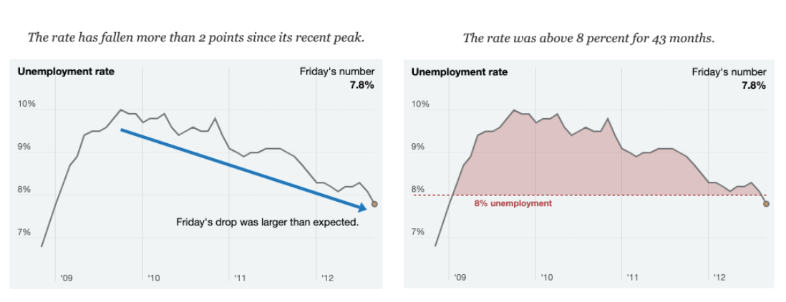

Data Visualization
Effective data visualizations - the ones that stick with us, can help us understand complex issues, and those that encourage us to change our behaviors and actions to be more equitable, inclusive, and kind - they are more that points on a map. Great data visualizations are communication tools that are user-centered and tell a compelling story that connects with the audience.
![Venn diagram with three overlapping circles: Content, Medium, and Access. Content is what you include in your communication and how you choose to say it. Medium is what form your communication takes, like the difference between a paper, and animated video, and a searchable database. Access is how easily and how completely your audience can engage with and understand your information. The content and medium work together to increase clarity and offer better depth. The medium of distribution supports the ideal accessibility for the information for each audience, including feedback and engagement. The content is created considering accessibility, including comprehension and cultural appropriateness. When all of the components intersect (i.e. the middle of the venn diagram), the product works for the intended audience.](images/audience-content-medium-access.png)
When thinking of the Data-Information-Knowledge-Wisdom graphic at the top of the Data Analysis page - data visualizations are one tool we can use to add context and meaning to data to create information and knowledge. Ideally, the insights gleaned from our visualizations can then be used to make data and equity-informed decisions and to take effective and impactful action.
Data Visualization with an Equity Lens
When it comes to creating data visualizations with an equity lens, it boils down to making decisions that consider equity and inclusion in the way results are shown/communicated and that promote accessibility of the data, information, and tool as a whole. As you develop your data visualization or equivalent application - be sure to keep the below considerations in mind and make data, communication, and design choices that support the advancement of equity, inclusion, and justice.
General Data Visualization Considerations
Take a user-centered design approach
Consider who the audience will be for the product you’re developing and make decisions that will prioritize their needs so they are able to easily and efficiently use, engage, interact, and experience the product.
Research - Let’s use an equity lens here. Instead of “researching” your users and audience, try getting to know them by prioritizing relationship building and engagement. Ideally, by the time you’re at the data visualization phase, you have already identified key partners and have been working or engaging with them during other phases of the project. See the Planning section on collecting expert input for more guidance on outreach and engagement.
Empathy - According to Dr. Brené Brown: empathy is about feeling WITH people, and requires four qualities:
- Perspective Taking, or putting yourself in someone else’s shoes
- Staying out of judgement and listening
- Recognizing emotion in another person that you have maybe felt before
- Communicating that you can recognize that emotion
Integrating empathy into our data-intensive work requires us to consider how our audience and/or the communities whose data are being used will percieve or be impacted by our work. It means ensuring we’re developing the product and thinking about the data as more than mere points on a map or visualization, but as representing real humans, environments, or conditions that should be contextualized and considered with care. Some questions to consider include:
- Who is vulnerable in this context and how would they want to be counted?
- What information would they need to improve their lives?
- Who is undercounted or possibly missing entirely?
- Who was counted? Who did the counting? Why were they asking these people?
- Who benefits or is harmed if you forget the dots are people?
Iteration - The key here is knowing and planning for an iterative process from the beginning of your process. Add that feedback, implementation, and testing loop into your plan and allocate appropriate time to each piece to occur. When working with partners or communities using an iterative approach, be sure to consider:
- When it is appropriate to ask for feedback, and when it might be burdensome
- Different ways feedback might be gathered. We might think sending an email with a poll or survey linked is the easiest, but our partner might find it easier to talk through questions over the phone with you. Knowing which method(s) to use comes with time and relationship. When in doubt - ask for what people prefer and do your best to accommodate those requests.
- How much time is adequate for folks to be able to review what you send them and provide their feedback. When in doubt - plan for a longer feedback period than you think might be needed and confirm timelines with your partners (and adjust them if you can when your partners indicate more time is needed)
Consider who is missing from the data
It’s not uncommon for project teams to have gaps in data, even after all of your work and investment into the planning, data preparation and collection steps of the project. Often, this limitation of the data is out of your control - especially when you are using data from external sources. When this happens, it’s important to acknowledge, document, communicate those gaps and who is not adequately represented in your data product in a way that is accessible.
Consider how you group the data
How we aggregate or disaggregate the data can impact which groups are “seen” and well represented (or not) in our visualizations. This can also influence who is centered, valued, or prioritized in the narrative of the visualization, and who is excluded.
Carefully consider how groups are lumped or split - by aggregating many groups in the visualization beyond what might be statistically necessary (and not acknowledging who is being grouped together and why), we can unintentionally misrepresent said groups, minimize inequities and perpetuate invisible and erased experiences of those communities. The UNC Health’s Equity and Inclusion Analytics Workgroup recommends we ask ourselves the following questions when we’re thinking about how we will aggregate the data (or not):
Is important data/nuance lost by combining categories? Ensure there is not a meaningful difference in equity outcomes between groups that would be lost if combined.
Does the inclusion of uncombined data negatively impact the interpretation of the data visualization? Having too many groups can make visualizations cluttered and hard to interpret. Additionally, disaggregation leads to smaller group sizes, making comparisons to larger groups more difficult and making statistical significance more challenging. For that reason, it can sometimes be best to combine groups.
Does sharing uncombined data compromise confidential information (e.g., Personal Identifiable Information) or information considered private by the community from which it comes (e.g., locations of sacred tribal practices)? This will depend on the audience you are sharing the visualization with (e.g. internal vs public) and what information it contains.
If you ultimately decide to aggregate / combine groups, be sure to:
Be transparent about why you’re making those decisions (including the trade offs you considered) and documenting those decisions accordingly.
Acknowledge who is now not included in the data or visualization and explain what groups have been combined and why. Use comments, tooltips, or footnotes that can be easily accessed within the visualization to make it easier for users to find this information.
Think carefully about how groups are lumped in the “other” category of our analysis or visualization. Sometimes it’s necessary to combine groups into a single “other” category (e.g. to generalize small groups to protect confidentiality or to achieve adequate sample size for your analysis). The Urban Institute’s Do No Harm Data Visualizaation Recommendations include considering alternatives to using the term “other” as a catch-all category, including:
- Another ______ (e.g. Another race or Another group)
- Additional ______ (e.g. Additional races or Additional languages)
- All other self-descriptions
- People identifying as other or multiple races
- Identity not listed
- Identity not listed in the survey or dataset
Use plain, accessible, and inclusive language
Plain Language - Plain language is writing designed to ensure the audience can understand what you’re trying to communicate as easily, quickly, and comprehensively as possible. This means:
- Avoiding convoluted or verbose language
- Avoiding the use of jargon and acronyms
- Making critical information easy to see and understand
- Using a conversational rather than legal or bureaucratic tone
For more guidance on plain language, see:
- Center for Plain Language
- PlainLanguage.gov
- Water Boards Staff may also request plain language review from the Office of Public Participation, although that service is more geared towards the review of fact sheets, brochures, and FAQs rather than data visualizations or other data products.
- Healthy Watershed Partnership Guidance on Communicating Results
Accessible Language - Making language accessible to your audience may also require the translation of products (or product components) into the languages used by your audience. The Water Board’s Linguistic Isolation Tool can be used to help understand the different languages that are used by communities across the state.
Water Boards Staff may also request translation services from the Office of Public Participation, although that service is more geared towards the translation of documents, rather than data visualizations or other data products.
Inclusive Language - Words matter. It’s important to be mindful of the language and terms we use in general (see Non-Inclusive Terms to Avoid for some examples). The language we use in our products can be a way for us to show respect, empathy, and care for the communities connected to or impacted by the data. The UNC Health’s Equity and Inclusion Analytics Workgroup recommends we ask ourselves the following questions when we need to decide on language to use in our data products:
Do the words seek to fix, blame, shame, or change communities that are most marginalized, OR do they seek to address the oppressive systems that impact these communities?
Are the words racialized? Do the terms have a racist or colonialist implication? An example is the phrase “at risk.” Close your eyes and say the phrase “at risk.” Does a picture of a certain group or community come to mind? If so, stop and pick another word.
Is the language people-centered? Or do the phrases objectify communities? Distinguish between calling communities a name and describing what they are experiencing. For example: “people with disabilities,” “a person with asthma,” or “communities of color.”
How am I framing the words? What is the context and culture we are creating and perpetuating by using the words? Are the words positioning the communities we serve to live in their personal and collective power while addressing systemic oppression?
Do the words dehumanize the communities we serve? Words that take away agency, self-determination, and personal power and do not recognize communities’ inherent strengths and assets should be avoided.
Tell a story with the data
“While data may seem cut and dry, people are not”
- P. Kim Bui, Director of audience innovation at the Arizona Republic and author of Designing data visualisations with empathy
Humans are hardwired for story. Plopping points on a map or throwing together an interactive chart without adding context is not only insufficient, its ineffective!
Take the time to tell a story with the visualization or product you’re developing. Walk the audience through the the messages you want to convey, and back it up with the data. If you’re unsure what the story of your data is, or how to communicate it effectively, try collecting your thoughts using a COMPASS Message Box:
![The COMPASS Message Box with six sections and associated brainstorm questions: Audience (Who is impacted by this? Who can change this? Who cares about this?), Issue (Broadly, what are you working on? What keywords would you search to find your topic online?), Problems? (What specific dimension of the issue are you addressing?), So What? (What does your audience value? How does this impact them or something they care about?), Solutions? (What can be done to address the problem? Or what are you doing to address it?) and Benefits? (Who does this help and how? What improves in the short-term? Long-term?)](images/compass-box.png)
Data Visualization Design Considerations
This section walks through the different design decisions data practitioners must think through when developing a data visualization or similar data product, and provides recommendations on how to approach the work through a lens of accessibility, equity, and inclusion.
Data visualization design is composed of a series of compromises: Complexity vs Clarity. Depth vs. Speed. Pretty vs. Practical. The best visualizations maximize all of these, but usually, you have to pick some things over others. When designing a data visualization or similar data communication product, data practitioners should make decisions with their audience and equity in mind, do their best to follow the recommendations and best practices below to make the final data product as accessible and inclusive as possible.
Alternative Text (Alt Text)
Alt Text is descriptive text, usually associated with images or figures, that conveys the meaning and context of the item. When creating alt text, remember:
- It should complement but not replicate the caption
- Use language to describe what the audience should take away from looking at the item
- If there is text in the item, that text should be spelled out in the alt text.
Test to see if your alt text is effective by asking a colleague or project partner to listen to you (or a screen reader - see below) read the text aloud to them BEFORE they look at the item. Then, have them look at the item and ask if there are other details about the item that stand out to them as contributing to the meaning behind the item. If there is, add it in!
Screen readers are computer software that read the text aloud and include programs like NVDA, JAWS, Acrobat, Word. NVDA is free to download and is the Water Boards standard.
Color
Color can be a powerful communicator that should be selected purposefully. If we aren’t intentional with the colors we choose we may be unintentionally perpetuating stereotypes, creating hierarchies, or using color palettes that are not accessible to those with color vision differences.
When selecting colors for your visualization or data product, consider the recommendations from the UNC Health’s Equity and Inclusion Analytics Workgroup and the Urban Institute Data Visualization Style Guide:
Select the color palettes according to the message you’re trying to convey:
Categorical palettes are best when you want to distinguish discrete chunks of data that do not have an inherent ordering. It’s best to use a palette that has bold, contrasting, non-gradient colors.
Sequential palettes are best when data range from relatively low or uninteresting values to relatively high or interesting values. It’s best to use a palette that has a relatively subtle shift in hue accompanied by a large shift in brightness and saturation.
Avoid reinforcing stereotypes (e.g. using pink to represent female populations, and blue to represent male populations, using colors associated with skin tones or racial stereotypes).
When thinking about demographic data:
Not using color to differentiate between demographic groups helps avoid unintentionally creating a hierarchy between groups and reinforcing stereotypes, and instead enables color to instead be used to highlight group differences and assist with interpreting the data.
If color is determined to be necessary to differentiate between groups, the palette should be chosen carefully. Avoid using incremental color palettes (e.g., light to dark) to represent different demographic groups. Bold and contrasting, non-gradient color palettes are a best practice when displaying demographic data and incorporating color.
Consider plotting data disaggregated by race or ethnicity in their own separate charts, instead of plotting all disaggregated groups together in a single chart.
Plotting all groups on the same chart encourages comparison using a “deficit-based perspective” that focuses attention on what low-performing / worse off groups are lacking when compared with the high performing / better off groups.
Plotting a set of small multiples faceted by each racial and ethnic group can better encourage viewers to think about the specific needs and challenges facing each group.
Do not use color or shading alone to convey data or information. Instead pair color with patterns, textures, or shapes to convey data or information.
Avoid using too many colors/shapes/patterns at the same time. Our brains can really only hold (or effectively understand) three to five complex concepts at once. If you need to use six or more colors to represent the data - it might feel cluttered or overwhelming to the viewers. Consider consolidating categories or breaking up the chart into multiple smaller charts as described above.
A 3:1 contrast ratio is required for figures if a person must perceive a graphic in order to understand the content (e.g., colored lines in graphs, points on maps). However, text that is embedded in a graphic must meet a contrast ratio of 4.5:1 unless the text is incidental or there is no way of presenting the graphic with sufficient contrast without undermining the meaning. Use the Colour Contrast Analyser (CCA) or equivalent software to determine if the figure meets the ratio requirements.
Tools to help with color selection may already be integrated into your data visualization tools - if not, some other resources include:
- Color Brewer – tool to help create accessible color schemes for maps
- Non-exhaustive list of color vision difference simulators – Color Oracle, Coblis
- Non-exhaustive list of color palette packages for R – Base R Color Palette Guide, RColorBrewer, rcartocolor, viridis
- Paletton – tool to help explore colors and palettes
- WebAIM – color contract checker
Figure & Chart Types
As data practitioners, you decide how your audience will be able to view the data through your visualization or data product. While we might think that data are objective (spoiler - they’re not), how they are presented impacts how they are interpreted, preceived, and ultimately valued and acted upon. How we present the data impacts which stories we tell (or don’t tell) using that data.
The graphic below, from Data Feminism, illustrates how the same data can tell different stories depending on their presentation. The graphic on the left tells a story of how the unemployment has fallen substantially since it’s recent peak and might be interpreted as “good news”. The graphic on the right tells a story of how the unemployment rate has been consistently above 8% for a long time period and might be interpreted as “bad news”.

When selecting figure or chart types for your visualization or data product, consider:
How does the chart you use frame or present the data? What is the context and culture we are creating and perpetuating by presenting the data in that way? Are the charts we’re using positioning the communities we serve to live in their personal and collective power while addressing systemic oppression?
Is the chart used appropriate for the data you want to display? Think about your variables (string/categorical and numeric), the volume of data, and the question you are attempting to answer (or the story you’re trying to tell) through the visualization or data product.
Will the chart type be easily interpreted by the audience? Sometimes data practitioners might be inclined to use a complex chart so we can display more data at once (or just because we think it’s cool!). In moments like these, remember the words of Leonardo da Vinci — “Simplicity is the ultimate sophistication.” Think about what will be the most easy to understand and impactful for your audience.
How can I use the textual components of the chart (i.e., title, axis and other labels, legend, notes, caption, tooltips) to communicate simply and with clarity? More is not always more here. If context is provided elsewhere in the visualization or data product, maybe the title, caption, or tooltips are redundant. If there is only one data category that can be described by the title or caption, maybe a legend is not necessary. Think about what is essential and what can be removed or omitted to improve your clarity and communication.
How can other chart components (i.e. gridlines, axis lines/ticks, scales, spacing) be used to communicate simply and with clarity? If you have a lot of data on the chart - do gridlines help make sense of things, or cause confusion and clutter? Are there enough empty or negative spaces in the chart so that viewers are given the “visual breathing room” needed to easily absorb the messages you’re hoping the data conveys?
Tools to help with chart selection include:
- Cool Infographics Data Visualization Guides – collection of data visualization chart choosers, reference guides, cheat sheets, websites and infographics about data visualization design best practices.
Fonts & Typography
The fonts and typography we use determine how easy (or not) it is for the audience to efficiently read and comprehend whatever it is you’re trying to communicate. Typography (the art and technique of arranging type to make written language legible, readable and appealing when displayed) within a chart and visualization us a way to establish a hierarchy among elements within the visualization or data product and guides the reader through the visual product.
When selecting fonts and typography for your visualization or data product, consider:
Are the fonts you’re using accessible? The Water Boards recommends that all fonts (including in tables and figures) must be sans serif (e.g. Arial, Calibri, Helvetica), 12 point or larger. Serif fonts (e.g. Times New Roman) and fonts sized 11 points or lower (even in captions, tables, figures, etc.) should be avoided.
How many different font & size combinations are being used at once? Similar to the principles outlined in the color section above, using too many different types of fonts and sizes can make the visualization or data product feel cluttered or overwhelming to the viewers. Consider consolidating your use of fonts by giving different types of information with the same level of importance the same font and size.
Does the text have enough space around it? Some users may have cognitive disabilities or visual impairments that results in them having trouble reading lines of text when they’re too closely spaced. By prioritizing types of cognitive accessibility through thoughtful spacing, you contribute to a more inclusive visualization or data product.
For paragraphs - give the reader at least 1.15 pt spacing within paragraphs and at least 6 pt spacing after (or between) each paragraph.
For lists - if the list contains only a few words on each line, 1.15 pt spacing may be sufficient. If each item in the list has multiple lines of text, treat it as you would a paragraph and use 1.15 pt spacing within each list and at least 3 pt spacing after (or between) each item in the list.
For items within a chart - make sure the default spacing is sufficient. If items feel cramped, see if you can add spacing among items or reduce the amount of text needed for that particular item (e.g. shorten the title so it’s only a few words on a single line rather that a full sentence)
Specific recommendations the World Wide Web Consortium Web Content Accessibility Guidelines (WCAG) 2.1 on Text Spacing include:
- Line height (line spacing) to at least 1.5 times the font size;
- Spacing following paragraphs to at least 2 times the font size;
- Letter spacing (tracking) to at least 0.12 times the font size;
- Word spacing to at least 0.16 times the font size.
Tools to help with fonts & typography include:
Labels
The labels we use in our data products highlight or center the extent to which we reduce people and their experiences to components of our visualization or position and frame those same communities to live in their personal and collective power while addressing systemic oppression. Being mindful of the labels we use in our data products can help us connect and build trust with the communities that the data represents.
When selecting the labels for your visualization or data product:
Use clear and concise labels.
Use full labels such as “Black people” rather than “Black.”
Avoid using labels that reinforce stereotypes or inequitable or unjust norms.
When describing people from certain demographics, use descriptors that reflect the preferences of the communities it represents as much as you can.
- Remember that language continues to evolve. Certain labels that may have been acceptable years ago may no longer be, and we should adjust our labeling accordingly. The UNC Health’s Equity and Inclusion Analytics Workgroup notes that, for consistency and clarity, the data descriptors should match the categories used during data collection. However, if the data source you’re using has outdated language, updated language should be used in the label, and the outdated language can be noted in tooltips or footnotes of your visualization.
Be mindful of how labels are ordered. Ordering items as they appear in the data may reflect and reinforce historical biases. The Urban Institute Do No Harm Guide recommends considering alternative sorting parameters such as study focus, specific story or argument, quantitative relationship (i.e., magnitude of the results), alphabetical, or sample size (weighted or unweighted).
Layout
Maps
Shapes & Icons
Tables
tidy
don’t use highlights as information
captions
Resources
- Justinmind Blog (2020) User-centered design: a beginner’s guide
- Urban Institute Resources
- We All Count - Reverse Engineering Data Viz for Equity
- TEDx Talk (2014) Hardwired for story